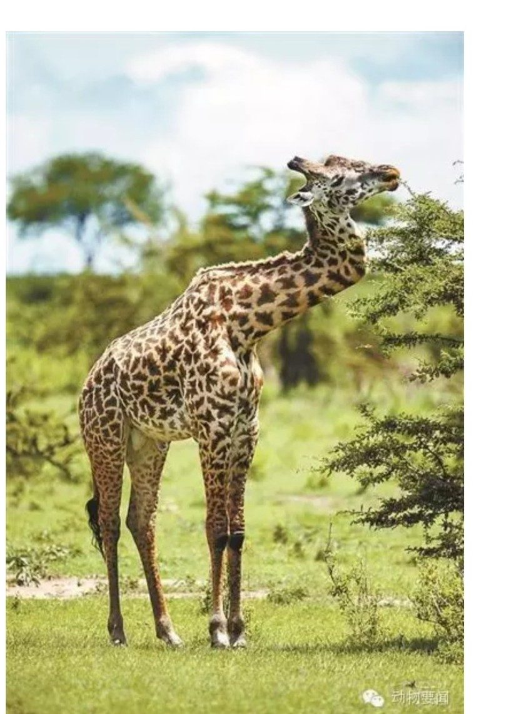
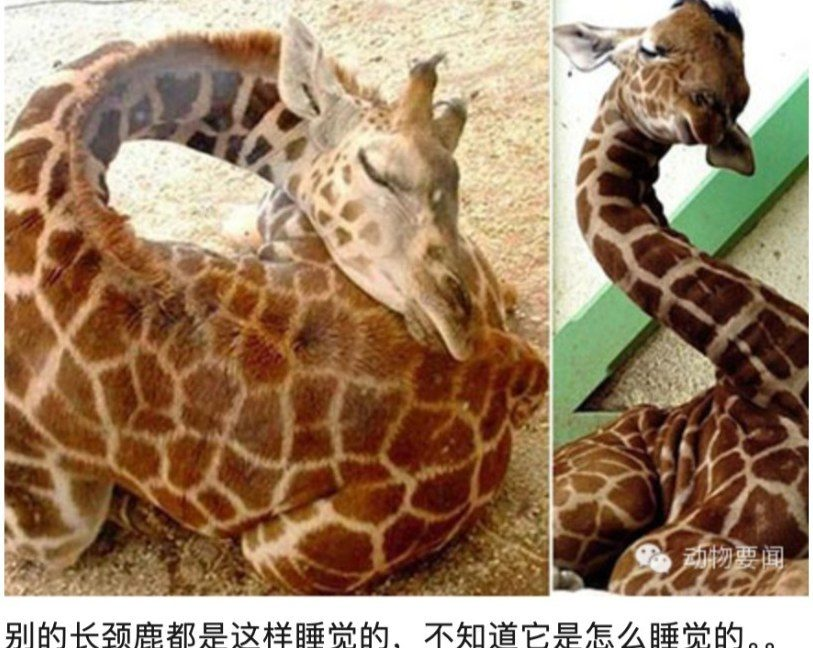

长颈鹿争女友脖子被打歪 “鹿坚强”顽强存活五年
据英国《每日电讯报》报道，坦桑尼亚的国家森林公园里生活着一只歪脖子的长颈鹿。据当地导游介绍，这只雄性长颈鹿在五六年前争女友的打斗中受伤，没有接受任何医疗护理，却幸存下来，只是脊椎变成了如今的之字形。
这只外号“鹿坚强”的大个子因脖子受伤，无法再吃到高处的树叶。但幸运的是，它能在较低的高度找到食物，也没被同伴抛弃。
摄影师马克·德赖斯代尔说：“我从没见过类似情况，但它似乎健康状况良好。”其他长颈鹿也“像对待正常的长颈鹿一样对待它。它似乎很高兴”。
马赛长颈鹿是所有长颈鹿种类中体型最高的，雄性可长至5.8米。


编译自《每日电讯报》· 转载自观察网